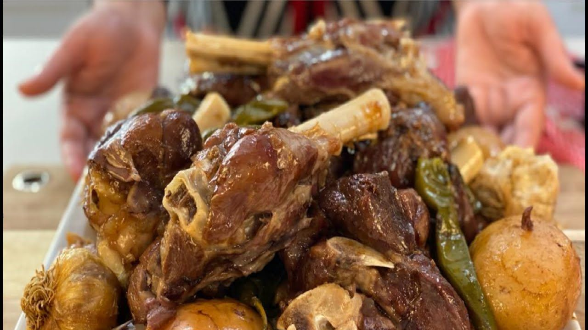

Dumpukht

Description
Dum pukht, larhmeen, dampokhtak, or slow oven cooking is a cooking
technique associated with the Mughal Empire in which meat and vegetables
are cooked over a low flame, generally in dough-sealed containers.
Traditions assign its origin in pre-partition India to the reign of Nawab
of Awadh Asaf-ud-Daulah.
ingredients
- Mutton - 1 Kg
- Goat Fat - 1 Kg (Charbi)
- Potato - 5 Pcs (Small)
- Tomato - 5 Pcs (Small)
- Green Chili - 4 Pcs
- Lemon Juice - 2 Pcs
- Black Pepper Powder - 1 tsp
- Salt - To Taste
- All-Purpose Flour - 2 Cups
Steps
- 1. Set your instant pot or pressure cooker to saute. If you are using fat, render the fat. If oil, heat until ready to use. Make sure you have rinsed your rice, and it is soaking.
- 2. Saute your onions. Cook until nice and golden brown.
- 3. Add your ginger garlic paste. Cook for about 1 minute. Then add your chili pepper. Cook another 30 seconds.
- 4. Now add your spices of coriander and cumin.
- 5. Add your meat and ensure it’s covered in spices. Add salt. You want to brown the entire outside of the meat.
- 6. To build your pressure, add 1 Cup of water. Scrape the bottom. Add a bouillon cube if you wish. Cover and cook on high pressure for 30 minutes.
- 7. Uncover the rice, salt test, and add some cracked black pepper.
- 8. Add the soaked and rinsed rice. Also, add your chopped tomato. Cover and cook on high pressure for 20 minutes—the “brown rice” option if you have it.